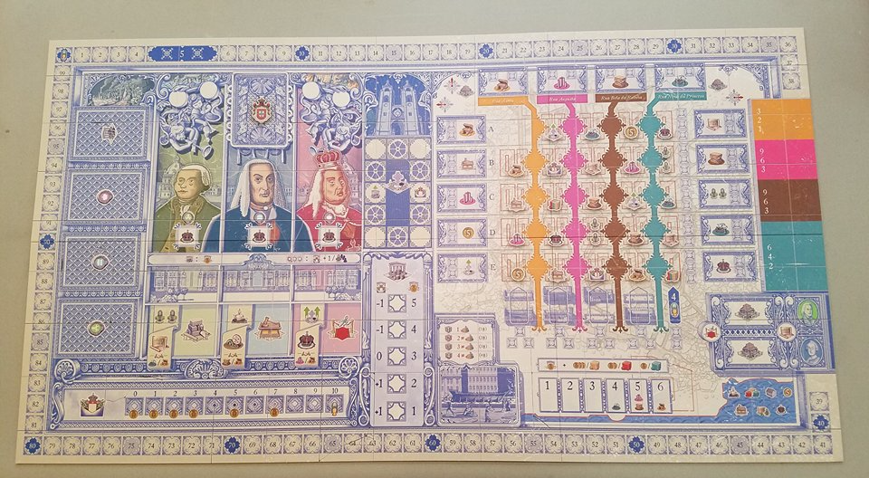

On November 1, 1755, Lisbon suffered an earthquake of an estimated magnitude of 8.5–9.0, followed by a tsunami and three days of fires. The city was almost totally destroyed. The Marques of Pombal — Sebastião José de Carvalho e Melo — was the then Minister of Foreign Affairs and the King put him in charge of the reconstruction of Lisbon. The Marques of Pombal gathered a team of engineers and architects and you, the players, are members of the nobility; members who will use your influence in the reconstruction and business development of the new city. You will work with the architects to build Lisbon anew, with the Marquis to develop commerce and with the King to open all the buildings, but the true reason you do all this is not for greatness or fame or even fortune, but for the most important thing of all in that time: wigs.
Lisboa is played on a real map of downtown Lisbon. During the planning of the downtown project, the type of business permitted in each street was previously determined. The economic motor is driven by the wealth of the royal treasure and this treasure is controlled by player actions during the game, making each game a totally different experience. The game ends after a fixed number of rounds and whoever gathers the most wigs by the end of the game wins.
Lisboa is played in rounds. Each round, all players play one turn. They may place one card on their display or replace one card from this display. During the game, players schedule hearings to get character favors, such as commerce, construction, and openings. The iconic buildings score the stores and stores provide income to the players. Players need to manage influence, construction licenses, store permits, church power, workers and money, with the workers' cost being dependent on the prestige of the players.
